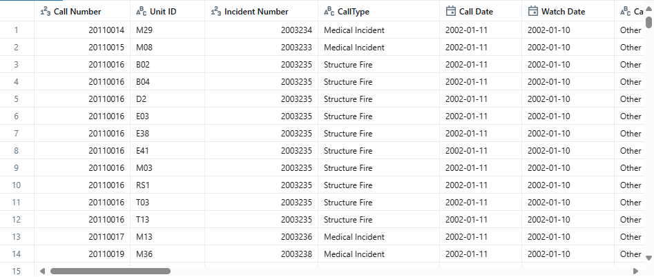
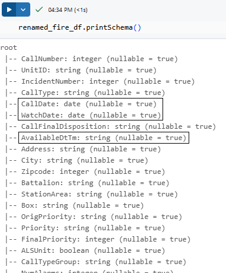

In this lecture, we will learn to apply the transformations.
We have already learned to create a data frame for the fire call response data set. Let me recreate it again:
raw_fire_df = spark.read \ .format("csv") \ .option("header", "true") \ .option("inferSchema", "true") \ .load("/databricks-datasets/learning-spark-v2/sf-fire/sf-fire-calls.csv") display(raw_fire_df)

This dataframe has got two problems.
Column Names are not standardized(blank space)
Date fields are of string type.
Note: Spark dataframe column names are case insensitive. So upper case or lower case column names are the same.
We can use the withColumnRenamed() transformation to rename the column and remove the space. This method takes two arguments. Old column name and New column name.
renamed_fire_df = raw_fire_df \
.withColumnRenamed("Call Number", "CallNumber") \
.withColumnRenamed("Unit ID", "UnitID")
This operation will return a new dataframe(2 column renamed) transforming the old dataframe. And will hold the new dataframe in a new variable remaned_fire_df. Old dataframe i.e raw_fire_df remain unchanged.
In this code, you should also learn the following concept:
You can create a chain of Spark transformation methods one after the other. eg .withColumnRenamed(...).withColumnRenamed(...)...
Spark transformation returns a new dataframe after transforming the old dataframe.
Spark dataframe is immutable - We cannot change them. We will always create a new dataframe from an existing dataframe.
So we fixed the first problem in our raw dataframe and created a new dataframe called remaned_fire_df. But we still have another problem. Date fields are of string type.
The call date and watch date represent a date. And the AvailableDtTm represents a timestamp. But what is the data type for these fields?
You can see the data type information using the printSchema() utility method.

We can see CallDate and Watch are of date type which is expected but AvailableDtTm is of string type which should be a timestamp.
fire_df = renamed_fire_df \
.withColumn("AvailableDtTm", to_timestamp("AvailableDtTm", "MM/dd/yyy hh:mm:ss a")) \
.withColumn("Delay", round('Delay', 2))
We are using to_timespamp() function here. So we must import this function from the pyspark.sql.functions package - from pyspark.sql.functions import *
The withColumn() can transform one column into another column. The withColumn() transformation converts only one column in the given dataframe.
It takes two arguments: the column name and the conversion logic. We have chain one more withColumn() transformation here. We transformed the Delay column too - to round the Delay column for two digits(from 3.666789 to 3.66).